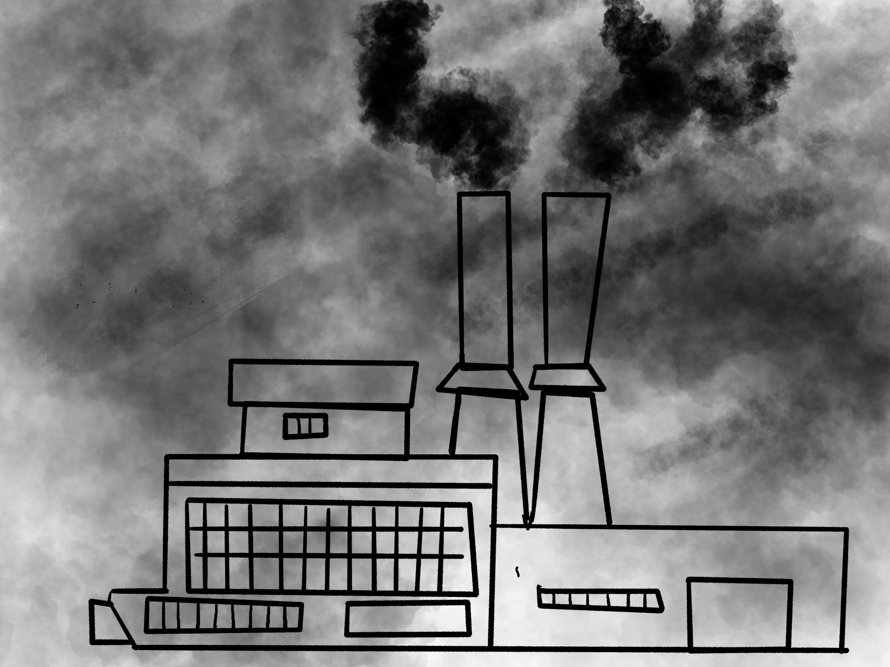
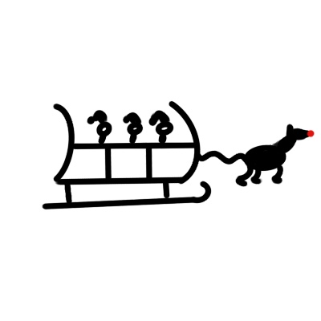
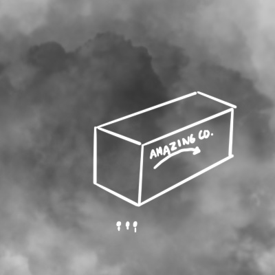
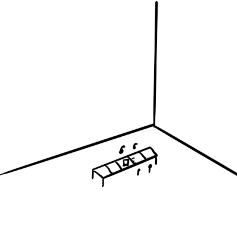
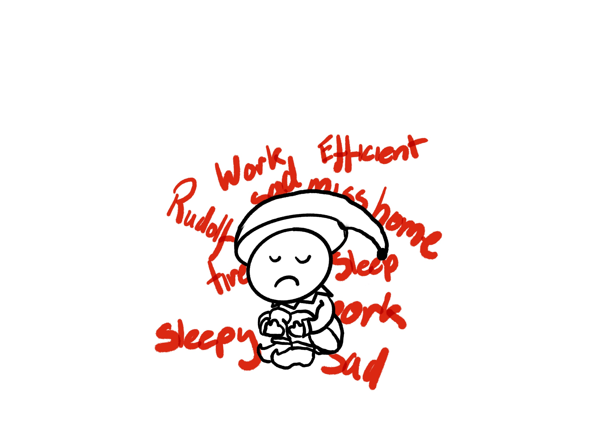
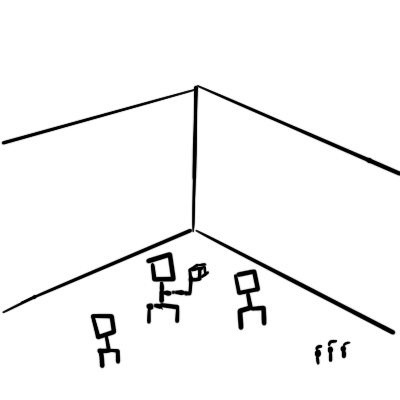

Industriaville’s smoggy and dark atmosphere made it a place that no person would willingly venture. You couldn’t take a step into the boundary of Industriaville without inhaling the fumes and smoke of all the products being produced every day. Luckily for the residents of neighbouring town Consumeropolis, the smoke was well behaved and stopped right on the boundary towns boundary line so the residents of Consumerville didn’t have to live with the consequences of their spending habits.

One fateful night, 3 of Santa’s elves stole Rudolf and took him for a joyride. There was no way that Santa was going to find out one elf thought. Unfortunately for them as they were flying around the world, they entered Industriaville’s airspace. Rudolf quickly reversed velocities and 3 elves plummeted down to the surface of Industriaville. The thick smoke was dense enough to slow the elves down on their descent so that they survived.

Through the dense smog they spotted a light. It was the sign to the main factory of Amazing Co. The elves entered seeking shelter from the elements, and they were greeted with a big smile from a well-dressed gentleman who called himself Mr Cash. The elves asked Mr Cash if they could stay here until they could figure out a way to fly home. Mr Cash agreed with a smirk, but on one condition, that the elves would work in the factory while they figured out a solution. Little did the elves know, they had subjugated themselves to a lifetime of work creating all the weird and whacky products for Amazing Co.

With the dense smoke outside blocking out any light, the elves lost all sense of time and continued to make items long past the time that they intended. As the elves are so efficient at working after all their experience with Santa, they become Mr Cash’s favourite hostages.

The elves become more and more sad as the days go on, not knowing when they’ll ever be able to come home. But they were happy to work as they were paid much better by Mr Cash than they were with Santa, Santa didn’t pay them at all. They bargained with Mr Cash, if he could manage a way for them to go back and visit the North Pole, they would come back to Industriaville and work harder than ever for his new gadgets and gizmos. Mr Cash agreed, with a smirk, and said that they would regret it.

The elves returned after their visit and the elves came to find that they had been replaced by robots. Mr Cash had found a solution to instead of having to pay for pesky staff he was able to not pay anyone. The elves were defeated they had no source of income anymore, not that they would’ve known what to spend the money on anyways.
